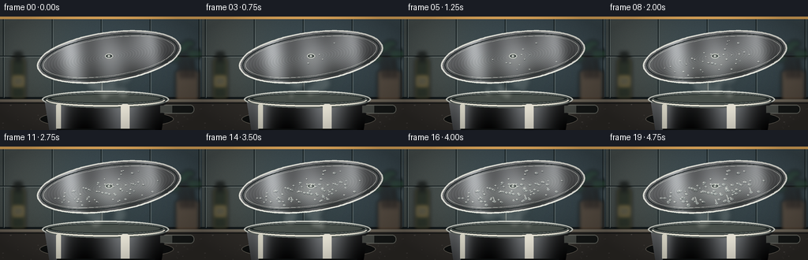
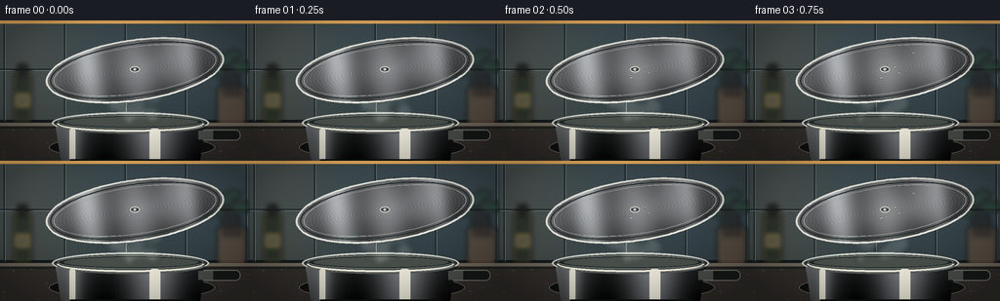
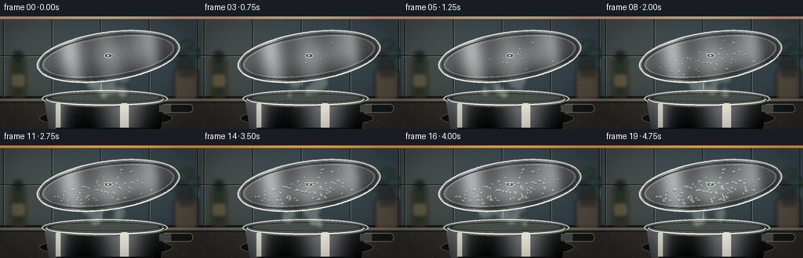
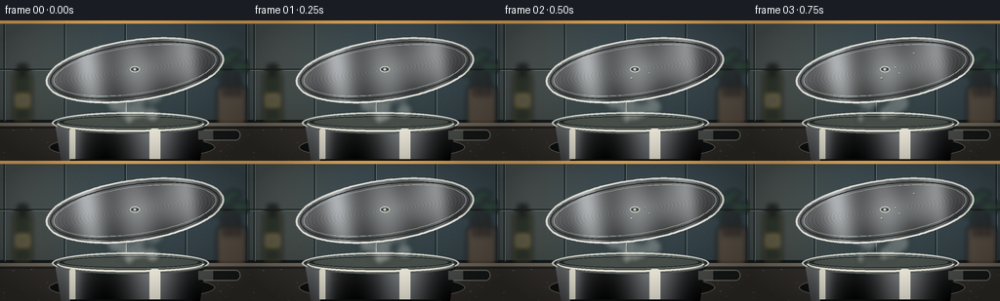

CODING AGENTS AS PIXEL WORLD MODELS
traex/GPT-5.6-Sol · phygen_103
点击播放 · 原生 RGB 像素
逐轮保存的候选
回放视频、检查图与代码变化。
每份候选均可单独播放。实际图片检查记录在下方工具轨迹中。
候选 01播放与检查图
点击播放 · 原生 RGB 像素


展开代码变化
--- 上一保存版本
+++ 本次保存版本
@@ -0,0 +1,273 @@
+from pathlib import Path
+import math
+import numpy as np
+from PIL import Image, ImageDraw, ImageFilter
+import artifact_io
+
+# Procedural, deterministic text-to-video render. Draw at 3x and downsample.
+W, H, N, S = 256, 144, 20, 3
+WW, HH = W*S, H*S
+rng = np.random.default_rng(103)
+
+def sc(v): return int(round(v*S))
+def pts(seq): return [(sc(x), sc(y)) for x, y in seq]
+
+def alpha_comp(base, layer):
+ return Image.alpha_composite(base.convert('RGBA'), layer.convert('RGBA'))
+
+# ---------- static kitchen ----------
+def make_background():
+ y, x = np.mgrid[0:HH, 0:WW]
+ # cool slate backsplash, warm light from the left
+ yy = y / S
+ xx = x / S
+ top = np.zeros((HH, WW, 3), dtype=np.float32)
+ top[..., 0] = 43 + 20*(1-yy/H) + 18*np.exp(-((xx-24)/60)**2)
+ top[..., 1] = 56 + 24*(1-yy/H) + 12*np.exp(-((xx-24)/65)**2)
+ top[..., 2] = 61 + 27*(1-yy/H) + 4*np.exp(-((xx-24)/70)**2)
+ # subtle fixed film/granite grain
+ grain = rng.normal(0, 1.7, (HH, WW, 1))
+ top += grain
+ top = np.clip(top, 0, 255).astype(np.uint8)
+ im = Image.fromarray(top, 'RGB').convert('RGBA')
+ d = ImageDraw.Draw(im, 'RGBA')
+ # backsplash tiles and grout
+ d.rectangle((0, sc(102), WW, sc(105)), fill=(20,27,29,120))
+ for xx0 in [4, 66, 128, 190, 252]:
+ d.line((sc(xx0),0,sc(xx0),sc(103)), fill=(20,30,33,105), width=sc(1))
+ d.line((sc(xx0+1),0,sc(xx0+1),sc(103)), fill=(110,125,126,35), width=sc(.5))
+ d.line((0,sc(50),WW,sc(50)), fill=(21,31,34,105), width=sc(1))
+ d.line((0,sc(51),WW,sc(51)), fill=(114,127,127,30), width=sc(.6))
+ # under-cabinet warm strip
+ d.rectangle((0,0,WW,sc(3)), fill=(246,190,105,105))
+ # blurred background objects: oil bottle, utensil crock, herbs
+ blur = Image.new('RGBA',(WW,HH),(0,0,0,0)); b=ImageDraw.Draw(blur,'RGBA')
+ b.rounded_rectangle((sc(13),sc(53),sc(33),sc(105)), radius=sc(4), fill=(39,48,38,215), outline=(149,124,64,90), width=sc(1))
+ b.rectangle((sc(18),sc(45),sc(28),sc(58)), fill=(26,31,29,220))
+ b.rectangle((sc(16),sc(76),sc(30),sc(88)), fill=(179,142,60,50))
+ b.rounded_rectangle((sc(222),sc(68),sc(252),sc(107)), radius=sc(4), fill=(96,80,65,185))
+ for k in range(7):
+ bx=229+k*3.0
+ b.line((sc(bx),sc(78),sc(bx-5+2*(k%3)),sc(37+4*(k%2))), fill=(39,31,28,190), width=sc(2))
+ # leafy silhouette
+ for cx,cy,rx,ry in [(228,40,10,5),(239,34,8,4),(247,47,10,5),(220,53,8,4)]:
+ b.ellipse((sc(cx-rx),sc(cy-ry),sc(cx+rx),sc(cy+ry)), fill=(43,75,56,145))
+ blur=blur.filter(ImageFilter.GaussianBlur(sc(2.2)))
+ im=alpha_comp(im,blur)
+ # countertop
+ d=ImageDraw.Draw(im,'RGBA')
+ d.rectangle((0,sc(105),WW,HH), fill=(48,46,43,255))
+ d.rectangle((0,sc(105),WW,sc(108)), fill=(110,105,94,170))
+ d.line((0,sc(110),WW,sc(110)), fill=(21,24,24,160), width=sc(1))
+ # countertop mottling
+ for _ in range(110):
+ cx=float(rng.uniform(0,W)); cy=float(rng.uniform(109,H)); r=float(rng.uniform(.2,1.2))
+ c=int(rng.integers(48,78)); a=int(rng.integers(15,45))
+ d.ellipse((sc(cx-r),sc(cy-r/2),sc(cx+r),sc(cy+r/2)), fill=(c,c-2,c-5,a))
+ # rear burner ring
+ d.ellipse((sc(50),sc(118),sc(220),sc(142)), fill=(14,16,16,190), outline=(101,99,91,80), width=sc(1))
+ return im
+
+BG=make_background()
+
+# Coordinate grids, used for physically smooth surfaces and masks
+gy,gx=np.mgrid[0:HH,0:WW]; X=gx/S; Y=gy/S
+
+# lid geometry
+LCX,LCY=138,51
+ANG=math.radians(-8)
+ca,sa=math.cos(ANG),math.sin(ANG)
+U=(X-LCX)*ca+(Y-LCY)*sa
+V=-(X-LCX)*sa+(Y-LCY)*ca
+LQ=(U/91.0)**2+(V/31.0)**2
+LIDMASK=LQ<=1
+INNER=((U/84.0)**2+(V/25.0)**2)<=1
+
+# deterministic droplets. Denser near the steam impact in the center/lower underside.
+drops=[]
+for i in range(82):
+ # gaussian radial placement constrained to inner lid
+ while True:
+ u=float(rng.normal(0,38)); v=float(rng.normal(5,10))
+ if (u/78)**2+(v/21)**2<1: break
+ onset=int(np.clip(rng.normal(8.3 + .025*abs(u),3.2),2,16))
+ base=float(rng.uniform(.35,1.0))
+ rate=float(rng.uniform(.055,.12))
+ drops.append((u,v,onset,base,rate))
+# intentional coalescing drops / rivulets, visible late
+rivulets=[(-27,9,11,8.5),(13,12,12,10.5),(43,7,14,7.5),(-2,16,15,6.0)]
+
+def xy_from_uv(u,v):
+ return LCX + u*ca-v*sa, LCY + u*sa+v*ca
+
+def draw_pot(base, frame):
+ im=base.copy()
+ # pot body mask and metallic gradient
+ arr=np.zeros((HH,WW,4),dtype=np.uint8)
+ body=(Y>=103)&(Y<=150)&(X>=56)&(X<=211)
+ # gently taper lower body
+ body &= (X >= 56 + np.maximum(Y-105,0)*.16) & (X <= 211-np.maximum(Y-105,0)*.16)
+ metal=68+34*np.cos((X-58)/153*math.pi*3.1)+35*np.exp(-((X-157)/21)**2)+42*np.exp(-((X-76)/8)**2)
+ metal += -0.8*(Y-105)
+ arr[...,0]=np.clip(metal*.91,0,255); arr[...,1]=np.clip(metal*.96,0,255); arr[...,2]=np.clip(metal,0,255); arr[...,3]=body*255
+ im=alpha_comp(im,Image.fromarray(arr,'RGBA'))
+ d=ImageDraw.Draw(im,'RGBA')
+ # far rim, water and near rim
+ d.ellipse((sc(53),sc(94),sc(214),sc(116)), fill=(45,52,51,255), outline=(196,204,199,245), width=sc(2))
+ d.ellipse((sc(59),sc(97),sc(208),sc(111)), fill=(31,39,39,255), outline=(112,124,122,210), width=sc(1))
+ # softly glowing hot water reflection
+ d.ellipse((sc(65),sc(99),sc(203),sc(109)), fill=(71,80,76,160))
+ d.arc((sc(58),sc(97),sc(209),sc(114)),0,180,fill=(235,238,226,230),width=sc(2))
+ d.arc((sc(58),sc(99),sc(210),sc(116)),4,176,fill=(86,95,93,220),width=sc(2))
+ # vertical pot highlights and bottom shadow
+ d.rounded_rectangle((sc(71),sc(111),sc(77),sc(143)),radius=sc(2),fill=(221,224,211,42))
+ d.rounded_rectangle((sc(153),sc(111),sc(164),sc(145)),radius=sc(3),fill=(232,234,223,31))
+ d.line((sc(72),sc(143),sc(196),sc(143)),fill=(14,17,17,170),width=sc(2))
+ # right handle
+ d.rounded_rectangle((sc(205),sc(112),sc(246),sc(123)),radius=sc(5),fill=(22,25,24,255),outline=(113,118,112,170),width=sc(1))
+ d.rectangle((sc(203),sc(113),sc(218),sc(122)),fill=(73,78,75,255))
+ return im
+
+def draw_steam(im, f):
+ t=f/4.0
+ layer=Image.new('RGBA',(WW,HH),(0,0,0,0)); d=ImageDraw.Draw(layer,'RGBA')
+ # broad steam volume, smooth temporal motion upward and sideways
+ for j in range(15):
+ phase=j*.91
+ prog=((t*.29+j/15.0)%1.0)
+ yy=100-prog*54
+ xx=132 + 20*math.sin(prog*3.4+phase+t*.48) + 7*math.sin(phase*2.3)
+ rx=5+prog*12 + 2*math.sin(phase)
+ ry=7+prog*8
+ alpha=int(19+30*(1-prog)*(.65+.35*math.sin(phase)**2))
+ d.ellipse((sc(xx-rx),sc(yy-ry),sc(xx+rx),sc(yy+ry)),fill=(231,239,233,alpha))
+ # coherent wisps bending toward the cool lid
+ for j in range(5):
+ phase=j*1.37
+ path=[]
+ for k in range(22):
+ p=k/21
+ yy=101-p*47
+ xx=128+(j-2)*10 + math.sin(p*5.2+phase+t*.72)*(4+7*p) + 6*p
+ path.append((sc(xx),sc(yy)))
+ d.line(path, fill=(238,245,240,55 if j!=2 else 70), width=sc(1.4+0.45*(j%2)), joint='curve')
+ layer=layer.filter(ImageFilter.GaussianBlur(sc(3.1)))
+ im=alpha_comp(im,layer)
+ # a few sharper vapor filaments
+ fine=Image.new('RGBA',(WW,HH),(0,0,0,0)); fd=ImageDraw.Draw(fine,'RGBA')
+ for j in range(4):
+ path=[]
+ for k in range(18):
+ p=k/17
+ xx=120+j*11+4*math.sin(p*7+j*1.2+t*.8)
+ yy=100-p*40
+ path.append((sc(xx),sc(yy)))
+ fd.line(path,fill=(248,250,244,30),width=sc(.65))
+ fine=fine.filter(ImageFilter.GaussianBlur(sc(.7)))
+ return alpha_comp(im,fine)
+
+def draw_lid(im, f):
+ # Brushed steel underside generated directly from local surface coordinates.
+ arr=np.zeros((HH,WW,4),dtype=np.uint8)
+ radial=np.sqrt((U/91)**2+(V/31)**2)
+ metal=92 + 36*(1-radial) + 15*np.cos(U*.13) + 11*np.sin((U+V)*.055)
+ metal += 54*np.exp(-((U+47)/14)**2) + 36*np.exp(-((U-57)/10)**2)
+ metal += -24*(V/31)
+ # subtle concentric brushing
+ metal += 5*np.sin(np.sqrt((U*1.1)**2+(V*3.3)**2)*1.5)
+ arr[...,0]=np.clip(metal*.93,0,255)
+ arr[...,1]=np.clip(metal*.97,0,255)
+ arr[...,2]=np.clip(metal,0,255)
+ arr[...,3]=LIDMASK*255
+ im=alpha_comp(im,Image.fromarray(arr,'RGBA'))
+ d=ImageDraw.Draw(im,'RGBA')
+ # rotated rims as smooth sampled loops
+ for rx,ry,col,wid in [(91,31,(224,230,225,245),2.0),(87,27,(39,48,49,210),1.2),(83.5,24.2,(181,190,186,115),.7)]:
+ loop=[]
+ for k in range(181):
+ a=2*math.pi*k/180
+ loop.append(tuple(sc(z) for z in xy_from_uv(rx*math.cos(a),ry*math.sin(a))))
+ d.line(loop,fill=col,width=sc(wid),joint='curve')
+ # central screw and embossed rings
+ sx,sy=xy_from_uv(0,-1)
+ d.ellipse((sc(sx-5),sc(sy-3.1),sc(sx+5),sc(sy+3.1)),fill=(53,62,62,230),outline=(206,214,209,210),width=sc(1))
+ d.ellipse((sc(sx-1.6),sc(sy-1.2),sc(sx+1.6),sc(sy+1.2)),fill=(190,198,194,230))
+ # growing matte fog at the impact zone, clipped exactly to the inner lid
+ if f>=2:
+ strength=min(1,(f-1)/9)
+ fog=np.zeros((HH,WW,4),dtype=np.uint8)
+ field=np.exp(-(((U+2)/56)**2+((V-7)/15)**2)*1.2)
+ field += .38*np.exp(-(((U-44)/27)**2+((V-1)/10)**2))
+ # granular micro-condensation texture emerges with the haze
+ texture=.82+.18*np.sin(U*1.8+V*2.7)
+ a=np.clip(field*texture*strength*72,0,76)
+ fog[...,0]=202; fog[...,1]=214; fog[...,2]=211
+ fog[...,3]=(a*INNER).astype(np.uint8)
+ im=alpha_comp(im,Image.fromarray(fog,'RGBA').filter(ImageFilter.GaussianBlur(sc(.45))))
+ return im
+
+def draw_condensation(im,f):
+ layer=Image.new('RGBA',(WW,HH),(0,0,0,0)); d=ImageDraw.Draw(layer,'RGBA')
+ # beads are persistent and grow; highlights/shadows imply clear water on metal
+ for idx,(u,v,onset,base,rate) in enumerate(drops):
+ age=f-onset
+ if age<0: continue
+ r=min(2.15,base+rate*age)
+ # coalescence: selected late beads elongate down-slope
+ stretch=1.0 + (0.18*max(age-6,0) if idx%17==0 else 0)
+ x,y=xy_from_uv(u,v)
+ rx=r; ry=r*.58*stretch
+ # lower-right contact shadow
+ d.ellipse((sc(x-rx-.15),sc(y-ry+.55),sc(x+rx+.45),sc(y+ry+.75)),fill=(22,34,35,75))
+ # translucent water lens
+ d.ellipse((sc(x-rx),sc(y-ry),sc(x+rx),sc(y+ry)),fill=(180,200,198,72),outline=(224,235,231,150),width=max(1,sc(.35)))
+ d.ellipse((sc(x-rx*.50),sc(y-ry*.57),sc(x-rx*.05),sc(y-ry*.08)),fill=(255,255,249,215))
+ # coalesced rivulets slide toward the low (right/lower) rim in late frames
+ for u,v,onset,maxlen in rivulets:
+ age=f-onset
+ if age<0: continue
+ length=min(maxlen, age*1.25)
+ x1,y1=xy_from_uv(u,v); x2,y2=xy_from_uv(u+length*.20,v+length)
+ d.line((sc(x1),sc(y1),sc(x2),sc(y2)),fill=(220,232,229,135),width=sc(1.25))
+ d.line((sc(x1-.4),sc(y1-.4),sc(x2-.4),sc(y2-.4)),fill=(255,255,250,135),width=sc(.38))
+ rr=1.2+min(age,5)*.13
+ d.ellipse((sc(x2-rr),sc(y2-rr*.62),sc(x2+rr),sc(y2+rr*.62)),fill=(191,213,211,115),outline=(244,248,242,160),width=sc(.4))
+ im=alpha_comp(im,layer)
+ # falling drips after coalescence reaches the rim: positions change continuously
+ if f>=15:
+ dr=Image.new('RGBA',(WW,HH),(0,0,0,0)); q=ImageDraw.Draw(dr,'RGBA')
+ sequences=[(15,23,84),(18,-42,55)]
+ for start,u0,v0 in sequences:
+ age=f-start
+ if age<0: continue
+ bx,by=xy_from_uv(u0,v0)
+ # detach from lower edge and accelerate
+ fall=age*2.0+age*age*1.05
+ yy=by+fall
+ if yy<105:
+ q.line((sc(bx),sc(by),sc(bx),sc(min(yy,by+7))),fill=(220,233,229,max(25,130-age*18)),width=sc(.7))
+ q.ellipse((sc(bx-1.25),sc(yy-2.1),sc(bx+1.25),sc(yy+2.1)),fill=(211,230,226,165),outline=(250,252,246,190),width=sc(.45))
+ im=alpha_comp(im,dr)
+ return im
+
+def render(f):
+ im=BG.copy()
+ im=draw_pot(im,f)
+ # Steam is behind the suspended lid, so it visibly terminates on contact.
+ im=draw_steam(im,f)
+ im=draw_lid(im,f)
+ im=draw_condensation(im,f)
+ # cinematic vignette and warm/cool grade
+ a=np.asarray(im.convert('RGB')).astype(np.float32)
+ nx=(X-W/2)/(W/2); ny=(Y-H/2)/(H/2)
+ vig=np.clip(1-.24*np.maximum(nx*nx+ny*ny-.18,0),.68,1)
+ a*=vig[...,None]
+ a[...,0]*=1.025; a[...,2]*=.985
+ a=np.clip(a,0,255).astype(np.uint8)
+ small=Image.fromarray(a,'RGB').resize((W,H),Image.Resampling.LANCZOS)
+ return np.asarray(small,dtype=np.uint8)
+
+frames=np.stack([render(i) for i in range(N)],axis=0)
+case_dir=Path(__file__).resolve().parent
+artifact_io.save(frames,case_dir)
+print('saved',frames.shape,frames.dtype,'range',frames.min(),frames.max())
候选 02播放与检查图
点击播放 · 原生 RGB 像素


展开代码变化
--- 上一保存版本
+++ 本次保存版本
@@ -139,7 +139,9 @@
xx=132 + 20*math.sin(prog*3.4+phase+t*.48) + 7*math.sin(phase*2.3)
rx=5+prog*12 + 2*math.sin(phase)
ry=7+prog*8
- alpha=int(19+30*(1-prog)*(.65+.35*math.sin(phase)**2))
+ # Vapor must remain legible after 3x downsampling, while still looking
+ # translucent rather than like smoke.
+ alpha=int(34+52*(1-prog)*(.65+.35*math.sin(phase)**2))
d.ellipse((sc(xx-rx),sc(yy-ry),sc(xx+rx),sc(yy+ry)),fill=(231,239,233,alpha))
# coherent wisps bending toward the cool lid
for j in range(5):
@@ -150,8 +152,8 @@
yy=101-p*47
xx=128+(j-2)*10 + math.sin(p*5.2+phase+t*.72)*(4+7*p) + 6*p
path.append((sc(xx),sc(yy)))
- d.line(path, fill=(238,245,240,55 if j!=2 else 70), width=sc(1.4+0.45*(j%2)), joint='curve')
- layer=layer.filter(ImageFilter.GaussianBlur(sc(3.1)))
+ d.line(path, fill=(238,245,240,82 if j!=2 else 106), width=sc(1.6+0.5*(j%2)), joint='curve')
+ layer=layer.filter(ImageFilter.GaussianBlur(sc(2.6)))
im=alpha_comp(im,layer)
# a few sharper vapor filaments
fine=Image.new('RGBA',(WW,HH),(0,0,0,0)); fd=ImageDraw.Draw(fine,'RGBA')
@@ -162,7 +164,7 @@
xx=120+j*11+4*math.sin(p*7+j*1.2+t*.8)
yy=100-p*40
path.append((sc(xx),sc(yy)))
- fd.line(path,fill=(248,250,244,30),width=sc(.65))
+ fd.line(path,fill=(248,250,244,50),width=sc(.75))
fine=fine.filter(ImageFilter.GaussianBlur(sc(.7)))
return alpha_comp(im,fine)
可观测工具轨迹
实际执行的命令与返回图片。
命令 1exit 0
/bin/bash -lc "ls -la && printf '\\n--- prompt.txt ---\\n' && cat prompt.txt"
命令 2exit 0
/bin/bash -lc "printf '%s\\n' '--- GENERATION_RULES.md ---' && cat GENERATION_RULES.md && printf '%s\\n' '--- task_spec.json ---' && cat task_spec.json"
命令 3exit 0
/bin/bash -lc "sed -n '1,260p' artifact_io.py"
命令 4exit 0
/bin/bash -lc "cat > generate.py <<'PY'
from pathlib import Path
import math
import numpy as np
from PIL import Image, ImageDraw, ImageFilter
import artifact_io
# Procedural, deterministic text-to-video render. Draw at 3x and downsample.
W, H, N, S = 256, 144, 20, 3
WW, HH = W*S, H*S
rng = np.random.default_rng(103)
def sc(v): return int(round(v*S))
def pts(seq): return [(sc(x), sc(y)) for x, y in seq]
def alpha_comp(base, layer):
return Image.alpha_composite(base.convert('RGBA'), layer.convert('RGBA'))
# ---------- static kitchen ----------
def make_background():
y, x = np.mgrid[0:HH, 0:WW]
# cool slate backsplash, warm light from the left
yy = y / S
xx = x / S
top = np.zeros((HH, WW, 3), dtype=np.float32)
top[..., 0] = 43 + 20*(1-yy/H) + 18*np.exp(-((xx-24)/60)**2)
top[..., 1] = 56 + 24*(1-yy/H) + 12*np.exp(-((xx-24)/65)**2)
top[..., 2] = 61 + 27*(1-yy/H) + 4*np.exp(-((xx-24)/70)**2)
# subtle fixed film/granite grain
grain = rng.normal(0, 1.7, (HH, WW, 1))
top += grain
top = np.clip(top, 0, 255).astype(np.uint8)
im = Image.fromarray(top, 'RGB').convert('RGBA')
d = ImageDraw.Draw(im, 'RGBA')
# backsplash tiles and grout
d.rectangle((0, sc(102), WW, sc(105)), fill=(20,27,29,120))
for xx0 in [4, 66, 128, 190, 252]:
d.line((sc(xx0),0,sc(xx0),sc(103)), fill=(20,30,33,105), width=sc(1))
d.line((sc(xx0+1),0,sc(xx0+1),sc(103)), fill=(110,125,126,35), width=sc(.5))
d.line((0,sc(50),WW,sc(50)), fill=(21,31,34,105), width=sc(1))
d.line((0,sc(51),WW,sc(51)), fill=(114,127,127,30), width=sc(.6))
# under-cabinet warm strip
d.rectangle((0,0,WW,sc(3)), fill=(246,190,105,105))
# blurred background objects: oil bottle, utensil crock, herbs
blur = Image.new('RGBA',(WW,HH),(0,0,0,0)); b=ImageDraw.Draw(blur,'RGBA')
b.rounded_rectangle((sc(13),sc(53),sc(33),sc(105)), radius=sc(4), fill=(39,48,38,215), outline=(149,124,64,90), width=sc(1))
b.rectangle((sc(18),sc(45),sc(28),sc(58)), fill=(26,31,29,220))
b.rectangle((sc(16),sc(76),sc(30),sc(88)), fill=(179,142,60,50))
b.rounded_rectangle((sc(222),sc(68),sc(252),sc(107)), radius=sc(4), fill=(96,80,65,185))
for k in range(7):
bx=229+k*3.0
b.line((sc(bx),sc(78),sc(bx-5+2*(k%3)),sc(37+4*(k%2))), fill=(39,31,28,190), width=sc(2))
# leafy silhouette
for cx,cy,rx,ry in [(228,40,10,5),(239,34,8,4),(247,47,10,5),(220,53,8,4)]:
b.ellipse((sc(cx-rx),sc(cy-ry),sc(cx+rx),sc(cy+ry)), fill=(43,75,56,145))
blur=blur.filter(ImageFilter.GaussianBlur(sc(2.2)))
im=alpha_comp(im,blur)
# countertop
d=ImageDraw.Draw(im,'RGBA')
d.rectangle((0,sc(105),WW,HH), fill=(48,46,43,255))
d.rectangle((0,sc(105),WW,sc(108)), fill=(110,105,94,170))
d.line((0,sc(110),WW,sc(110)), fill=(21,24,24,160), width=sc(1))
# countertop mottling
for _ in range(110):
cx=float(rng.uniform(0,W)); cy=float(rng.uniform(109,H)); r=float(rng.uniform(.2,1.2))
c=int(rng.integers(48,78)); a=int(rng.integers(15,45))
d.ellipse((sc(cx-r),sc(cy-r/2),sc(cx+r),sc(cy+r/2)), fill=(c,c-2,c-5,a))
# rear burner ring
d.ellipse((sc(50),sc(118),sc(220),sc(142)), fill=(14,16,16,190), outline=(101,99,91,80), width=sc(1))
return im
BG=make_background()
# Coordinate grids, used for physically smooth surfaces and masks
gy,gx=np.mgrid[0:HH,0:WW]; X=gx/S; Y=gy/S
# lid geometry
LCX,LCY=138,51
ANG=math.radians(-8)
ca,sa=math.cos(ANG),math.sin(ANG)
U=(X-LCX)*ca+(Y-LCY)*sa
V=-(X-LCX)*sa+(Y-LCY)*ca
LQ=(U/91.0)**2+(V/31.0)**2
LIDMASK=LQ<=1
INNER=((U/84.0)**2+(V/25.0)**2)<=1
# deterministic droplets. Denser near the steam impact in the center/lower underside.
drops=[]
for i in range(82):
# gaussian radial placement constrained to inner lid
while True:
u=float(rng.normal(0,38)); v=float(rng.normal(5,10))
if (u/78)**2+(v/21)**2<1: break
onset=int(np.clip(rng.normal(8.3 + .025*abs(u),3.2),2,16))
base=float(rng.uniform(.35,1.0))
rate=float(rng.uniform(.055,.12))
drops.append((u,v,onset,base,rate))
# intentional coalescing drops / rivulets, visible late
rivulets=[(-27,9,11,8.5),(13,12,12,10.5),(43,7,14,7.5),(-2,16,15,6.0)]
def xy_from_uv(u,v):
return LCX + u*ca-v*sa, LCY + u*sa+v*ca
def draw_pot(base, frame):
im=base.copy()
# pot body mask and metallic gradient
arr=np.zeros((HH,WW,4),dtype=np.uint8)
body=(Y>=103)&(Y<=150)&(X>=56)&(X<=211)
# gently taper lower body
body &= (X >= 56 + np.maximum(Y-105,0)*.16) & (X <= 211-np.maximum(Y-105,0)*.16)
metal=68+34*np.cos((X-58)/153*math.pi*3.1)+35*np.exp(-((X-157)/21)**2)+42*np.exp(-((X-76)/8)**2)
metal += -0.8*(Y-105)
arr[...,0]=np.clip(metal*.91,0,255); arr[...,1]=np.clip(metal*.96,0,255); arr[...,2]=np.clip(metal,0,255); arr[...,3]=body*255
im=alpha_comp(im,Image.fromarray(arr,'RGBA'))
d=ImageDraw.Draw(im,'RGBA')
# far rim, water and near rim
d.ellipse((sc(53),sc(94),sc(214),sc(116)), fill=(45,52,51,255), outline=(196,204,199,245), width=sc(2))
d.ellipse((sc(59),sc(97),sc(208),sc(111)), fill=(31,39,39,255), outline=(112,124,122,210), width=sc(1))
# softly glowing hot water reflection
d.ellipse((sc(65),sc(99),sc(203),sc(109)), fill=(71,80,76,160))
d.arc((sc(58),sc(97),sc(209),sc(114)),0,180,fill=(235,238,226,230),width=sc(2))
d.arc((sc(58),sc(99),sc(210),sc(116)),4,176,fill=(86,95,93,220),width=sc(2))
# vertical pot highlights and bottom shadow
d.rounded_rectangle((sc(71),sc(111),sc(77),sc(143)),radius=sc(2),fill=(221,224,211,42))
d.rounded_rectangle((sc(153),sc(111),sc(164),sc(145)),radius=sc(3),fill=(232,234,223,31))
d.line((sc(72),sc(143),sc(196),sc(143)),fill=(14,17,17,170),width=sc(2))
# right handle
d.rounded_rectangle((sc(205),sc(112),sc(246),sc(123)),radius=sc(5),fill=(22,25,24,255),outline=(113,118,112,170),width=sc(1))
d.rectangle((sc(203),sc(113),sc(218),sc(122)),fill=(73,78,75,255))
return im
def draw_steam(im, f):
t=f/4.0
layer=Image.new('RGBA',(WW,HH),(0,0,0,0)); d=ImageDraw.Draw(layer,'RGBA')
# broad steam volume, smooth temporal motion upward and sideways
for j in range(15):
phase=j*.91
prog=((t*.29+j/15.0)%1.0)
yy=100-prog*54
xx=132 + 20*math.sin(prog*3.4+phase+t*.48) + 7*math.sin(phase*2.3)
rx=5+prog*12 + 2*math.sin(phase)
ry=7+prog*8
alpha=int(19+30*(1-prog)*(.65+.35*math.sin(phase)**2))
d.ellipse((sc(xx-rx),sc(yy-ry),sc(xx+rx),sc(yy+ry)),fill=(231,239,233,alpha))
# coherent wisps bending toward the cool lid
for j in range(5):
phase=j*1.37
path=[]
for k in range(22):
p=k/21
yy=101-p*47
xx=128+(j-2)*10 + math.sin(p*5.2+phase+t*.72)*(4+7*p) + 6*p
path.append((sc(xx),sc(yy)))
d.line(path, fill=(238,245,240,55 if j"'!=2 else 70), width=sc(1.4+0.45*(j%2)), joint='"'curve')
layer=layer.filter(ImageFilter.GaussianBlur(sc(3.1)))
im=alpha_comp(im,layer)
# a few sharper vapor filaments
fine=Image.new('RGBA',(WW,HH),(0,0,0,0)); fd=ImageDraw.Draw(fine,'RGBA')
for j in range(4):
path=[]
for k in range(18):
p=k/17
xx=120+j*11+4*math.sin(p*7+j*1.2+t*.8)
yy=100-p*40
path.append((sc(xx),sc(yy)))
fd.line(path,fill=(248,250,244,30),width=sc(.65))
fine=fine.filter(ImageFilter.GaussianBlur(sc(.7)))
return alpha_comp(im,fine)
def draw_lid(im, f):
# Brushed steel underside generated directly from local surface coordinates.
arr=np.zeros((HH,WW,4),dtype=np.uint8)
radial=np.sqrt((U/91)**2+(V/31)**2)
metal=92 + 36*(1-radial) + 15*np.cos(U*.13) + 11*np.sin((U+V)*.055)
metal += 54*np.exp(-((U+47)/14)**2) + 36*np.exp(-((U-57)/10)**2)
metal += -24*(V/31)
# subtle concentric brushing
metal += 5*np.sin(np.sqrt((U*1.1)**2+(V*3.3)**2)*1.5)
arr[...,0]=np.clip(metal*.93,0,255)
arr[...,1]=np.clip(metal*.97,0,255)
arr[...,2]=np.clip(metal,0,255)
arr[...,3]=LIDMASK*255
im=alpha_comp(im,Image.fromarray(arr,'RGBA'))
d=ImageDraw.Draw(im,'RGBA')
# rotated rims as smooth sampled loops
for rx,ry,col,wid in [(91,31,(224,230,225,245),2.0),(87,27,(39,48,49,210),1.2),(83.5,24.2,(181,190,186,115),.7)]:
loop=[]
for k in range(181):
a=2*math.pi*k/180
loop.append(tuple(sc(z) for z in xy_from_uv(rx*math.cos(a),ry*math.sin(a))))
d.line(loop,fill=col,width=sc(wid),joint='curve')
# central screw and embossed rings
sx,sy=xy_from_uv(0,-1)
d.ellipse((sc(sx-5),sc(sy-3.1),sc(sx+5),sc(sy+3.1)),fill=(53,62,62,230),outline=(206,214,209,210),width=sc(1))
d.ellipse((sc(sx-1.6),sc(sy-1.2),sc(sx+1.6),sc(sy+1.2)),fill=(190,198,194,230))
# growing matte fog at the impact zone, clipped exactly to the inner lid
if f>=2:
strength=min(1,(f-1)/9)
fog=np.zeros((HH,WW,4),dtype=np.uint8)
field=np.exp(-(((U+2)/56)**2+((V-7)/15)**2)*1.2)
field += .38*np.exp(-(((U-44)/27)**2+((V-1)/10)**2))
# granular micro-condensation texture emerges with the haze
texture=.82+.18*np.sin(U*1.8+V*2.7)
a=np.clip(field*texture*strength*72,0,76)
fog[...,0]=202; fog[...,1]=214; fog[...,2]=211
fog[...,3]=(a*INNER).astype(np.uint8)
im=alpha_comp(im,Image.fromarray(fog,'RGBA').filter(ImageFilter.GaussianBlur(sc(.45))))
return im
def draw_condensation(im,f):
layer=Image.new('RGBA',(WW,HH),(0,0,0,0)); d=ImageDraw.Draw(layer,'RGBA')
# beads are persistent and grow; highlights/shadows imply clear water on metal
for idx,(u,v,onset,base,rate) in enumerate(drops):
age=f-onset
if age<0: continue
r=min(2.15,base+rate*age)
# coalescence: selected late beads elongate down-slope
stretch=1.0 + (0.18*max(age-6,0) if idx%17==0 else 0)
x,y=xy_from_uv(u,v)
rx=r; ry=r*.58*stretch
# lower-right contact shadow
d.ellipse((sc(x-rx-.15),sc(y-ry+.55),sc(x+rx+.45),sc(y+ry+.75)),fill=(22,34,35,75))
# translucent water lens
d.ellipse((sc(x-rx),sc(y-ry),sc(x+rx),sc(y+ry)),fill=(180,200,198,72),outline=(224,235,231,150),width=max(1,sc(.35)))
d.ellipse((sc(x-rx*.50),sc(y-ry*.57),sc(x-rx*.05),sc(y-ry*.08)),fill=(255,255,249,215))
# coalesced rivulets slide toward the low (right/lower) rim in late frames
for u,v,onset,maxlen in rivulets:
age=f-onset
if age<0: continue
length=min(maxlen, age*1.25)
x1,y1=xy_from_uv(u,v); x2,y2=xy_from_uv(u+length*.20,v+length)
d.line((sc(x1),sc(y1),sc(x2),sc(y2)),fill=(220,232,229,135),width=sc(1.25))
d.line((sc(x1-.4),sc(y1-.4),sc(x2-.4),sc(y2-.4)),fill=(255,255,250,135),width=sc(.38))
rr=1.2+min(age,5)*.13
d.ellipse((sc(x2-rr),sc(y2-rr*.62),sc(x2+rr),sc(y2+rr*.62)),fill=(191,213,211,115),outline=(244,248,242,160),width=sc(.4))
im=alpha_comp(im,layer)
# falling drips after coalescence reaches the rim: positions change continuously
if f>=15:
dr=Image.new('RGBA',(WW,HH),(0,0,0,0)); q=ImageDraw.Draw(dr,'RGBA')
sequences=[(15,23,84),(18,-42,55)]
for start,u0,v0 in sequences:
age=f-start
if age<0: continue
bx,by=xy_from_uv(u0,v0)
# detach from lower edge and accelerate
fall=age*2.0+age*age*1.05
yy=by+fall
if yy<105:
q.line((sc(bx),sc(by),sc(bx),sc(min(yy,by+7))),fill=(220,233,229,max(25,130-age*18)),width=sc(.7))
q.ellipse((sc(bx-1.25),sc(yy-2.1),sc(bx+1.25),sc(yy+2.1)),fill=(211,230,226,165),outline=(250,252,246,190),width=sc(.45))
im=alpha_comp(im,dr)
return im
def render(f):
im=BG.copy()
im=draw_pot(im,f)
# Steam is behind the suspended lid, so it visibly terminates on contact.
im=draw_steam(im,f)
im=draw_lid(im,f)
im=draw_condensation(im,f)
# cinematic vignette and warm/cool grade
a=np.asarray(im.convert('RGB')).astype(np.float32)
nx=(X-W/2)/(W/2); ny=(Y-H/2)/(H/2)
vig=np.clip(1-.24*np.maximum(nx*nx+ny*ny-.18,0),.68,1)
a*=vig[...,None]
a[...,0]*=1.025; a[...,2]*=.985
a=np.clip(a,0,255).astype(np.uint8)
small=Image.fromarray(a,'RGB').resize((W,H),Image.Resampling.LANCZOS)
return np.asarray(small,dtype=np.uint8)
frames=np.stack([render(i) for i in range(N)],axis=0)
case_dir=Path(__file__).resolve().parent
artifact_io.save(frames,case_dir)
print('saved',frames.shape,frames.dtype,'range',frames.min(),frames.max())
PY
python generate.py
ls -lh pixels.npz index.html inspection.png transition_check.png frames/00.png frames/19.png"命令 5exit 1
/bin/bash -lc "python generate.py >/tmp/generate.log 2>&1 && tail -n 2 /tmp/generate.log && python - <<'PY'
import json, numpy as np
from pathlib import Path
p=Path('.')
s=json.loads(Path('task_spec.json').read_text())
a=np.load('pixels.npz')['pixels']
assert a.shape==(s['height'],s['width'],s['frames'])
assert Path('frames/19.png').is_file() and len(list(Path('frames').glob('*.png')))==20
print('validated packed pixels:',a.shape,a.dtype,'artifacts complete')
PY"命令 6exit 0
/bin/bash -lc "python generate.py >.tmp/generate.log 2>&1 && tail -n 2 .tmp/generate.log && python - <<'PY'
import json, numpy as np
from pathlib import Path
s=json.loads(Path('task_spec.json').read_text())
a=np.load('pixels.npz')['pixels']
assert a.shape==(s['height'],s['width'],s['frames'])
assert Path('frames/19.png').is_file() and len(list(Path('frames').glob('*.png')))==20
print('validated packed pixels:',a.shape,a.dtype,'artifacts complete')
PY"视觉工具实际返回图片 1

视觉工具实际返回图片 2

保存候选 2 份；完成命令 6 次；可验证图片返回 2 张。原始 API 响应与完整日志保留在本地。